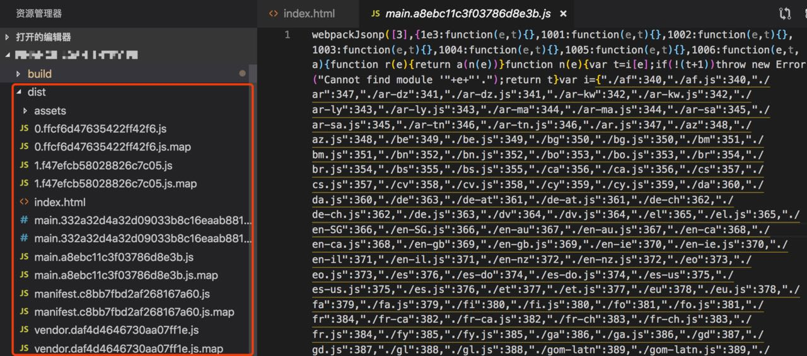
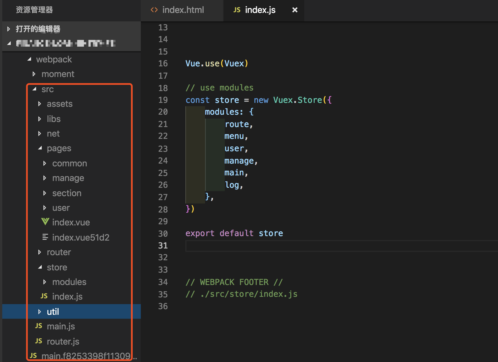
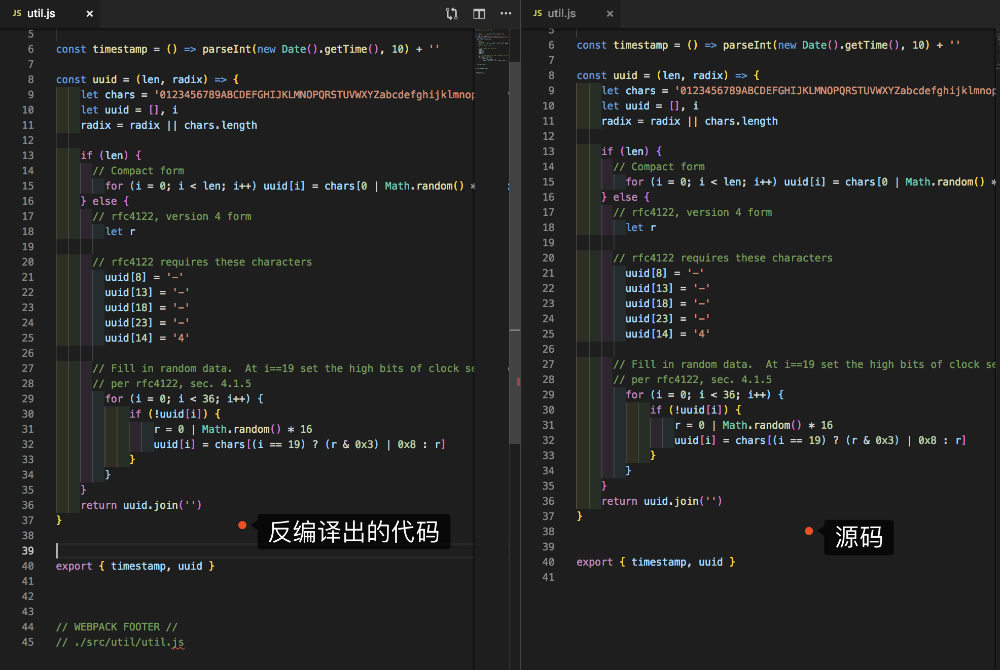
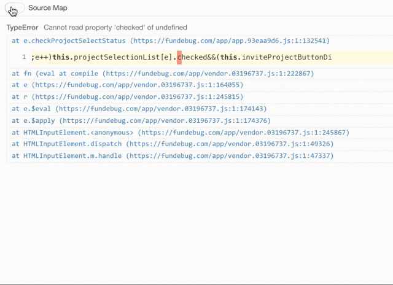
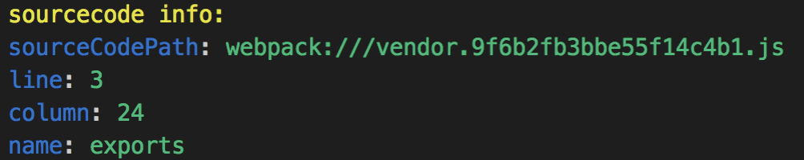

摘要： Source Map还是很神奇的。
Fundebug经授权转载并修改，版权归原作者所有。
工作中，生产环境代码是编译后代码，搜集到报错信息的行和列无法在源码中对应，很多时候只能靠“经验”去猜，本文针对这种情况，开发了一个npm命令行小工具，帮助快速定位报错的源码位置，提升效率。
由于现在构建工具盛行，前端部署的代码都是经过编译，压缩后的，于是乎，SoueceMap就扮演了一个十分重要的角色，用来作为源代码和编译代码之间的映射，方便定位问题。
首先全局安装reverse-sourcemap
npm install --global reverse-sourcemap选择编译后的代码进行测试，下面是vue项目编译生成的代码。

在命令行执行命令，将main.js反编译回源码，并输出到sourcecode目录下。
reverse-sourcemap -v dist/main.a8ebc11c3f03786d8e3b.js.map -o sourcecode
上面是执行命令输出的sourcecode目录，生成的目录结构和源码目录一致，打开一个文件，和源码做下对比：

可以看出，反编译出的代码无论目录结构还是具体代码都和源码一致。
如果使用了Fundebug的Source Map功能的话，则可以很方便的定位出错位置：

如果没有使用监控工具的话，生产环境的代码，经过压缩、编译，很不利于Debug。针对这个问题，需要准备一份生产环境代码的map文件，为了方便，可以在项目的package.json增加debug命令用来生成map文件。这条命令除了开启sourcemap，其他的具体webpack配置和生产环境配置相同。
"scripts": {
"start": "vue-cli-service serve --mode dev",
"stage": "vue-cli-service build --mode staging",
"online": "vue-cli-service build",
"debug": "vue-cli-service build --mode debug"
}有了map文件，通过SourceMap提供的API就可以定位到源码的位置。下面是实现的核心代码。
// Get file content
const sourceMap = require('source-map');
const readFile = function (filePath) {
return new Promise(function (resolve, reject) {
fs.readFile(filePath, {encoding:'utf-8'}, function(error, data) {
if (error) {
console.log(error)
return reject(error);
}
resolve(JSON.parse(data));
});
});
};
// Find the source location
async function searchSource(filePath, line, column) {
const rawSourceMap = await readFile(filePath)
const consumer = await new sourceMap.SourceMapConsumer(rawSourceMap);
const res = consumer.originalPositionFor({
'line' : line,
'column' : column
});
consumer.destroy()
return res
}最重要的就是使用SourceMap提供的 originalPositionFor API。 SourceMapConsumer.prototype.originalPositionFor(generatedPosition)
originalPositionFor API的参数为一个包含line和column属性的对象
line 编译生成代码的行号，从1开始
column 编译生成代码的列号，从0开始
这个方法会返回一个具有以下属性的对象
{
"source": "webpack:///src/pages/common/403.vue?c891", // 源代码文件的位置,如果无法获取，返回null。
"line": 4, // 源代码的行号，从1开始，如果无法获取，返回null。
"column": 24, // 源代码的列号，从0开始，如果无法获取，返回null。
"name": "get" // 源代码的标识，如果无法获取，返回null。
}为了使用方便，我将这个功能做成了一个命令行小工具。全局安装后，不需要做任何配置就可以使用。
npm install --global source-locationUsage: sl [options]
Options:
-v, --version output the version number
-p, --source-flie-path The generated source file 编译后的map文件
-l, --ine The line number in the generated source 编译后代码行号
-c, --column The column number in the generated source 编译后代码列号
-h, --help output usage information终端执行命令：
sl -p dist/1.f47efcb58028826c7c05.js.map -l 1 -c 34 命令行将会输出：源码的文件路径：path，源码行号：line，源码标识：name。

项目的github地址： github.com/front-end-y… 如有错误欢迎指出。
最后，推荐大家使用Fundebug，一款很好用的BUG监控工具，支持Source Map功能~